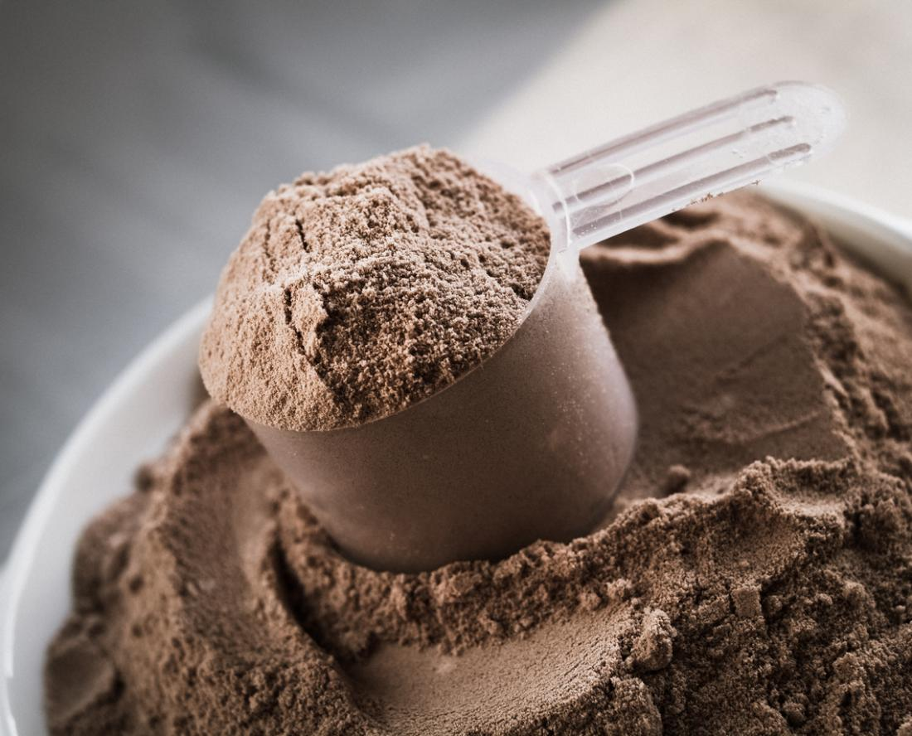
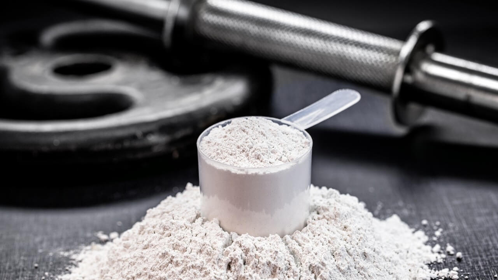
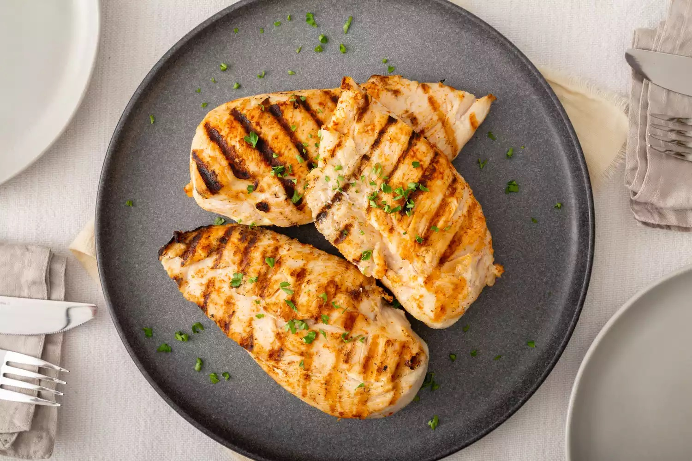
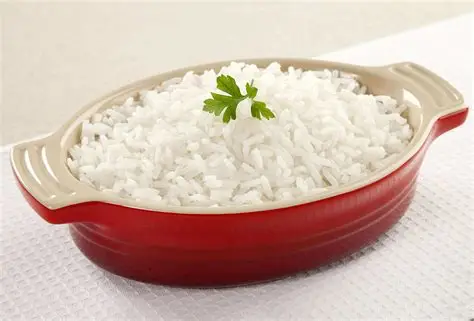

| Produtos | Idebtificação | Descrição | Preço | Imagem |
|---|---|---|---|---|
| Whey | 1 | Suplemento proteico usado para auxiliar no ganho de massa muscular e recuperação. | Preço médio: R$ 120,00 |  |
| Creatina | 2 | Ajuda no aumento de força, resistência e desempenho nos treinos. | Preço médio: R$ 70,00 |  |
| Pré-Treino | 3 | Suplemento energético que melhora o foco e disposição durante o treino. | Preço médio: R$ 90,00 | |
| Frango | 4 | Fonte de proteína magra muito usada em dietas fitness. | Preço médio: R$ 25,00/kg |  |
| Arroz | 5 | Alimento rico em carboidratos, fornece energia para o corpo. | Preço médio: R$ 30,00/5kg |  |
| Batata Docê | 6 | Carboidrato saudável muito consumido antes e após treinos. | Preço médio: R$ 8,00/kg | |